- Object ID: 00000018WIA30A2FE20GYZ
- Topic ID: id_13106615 Version: 3.24
- Date: Jan 13, 2023 5:53:11 PM
Cryocooler (F-50SH) setup
Prerequisites
| Personnel requirements | |||
|---|---|---|---|
| Required persons | Preliminary requirements | Procedure | Finalization |
| 2 | - | 120 minutes | - |
Shield/cryocooler installation
Procedure
- Open the Integrated Cooling Cabinet (ICC) cover and remove it.
Figure 1. Remove ICC cover 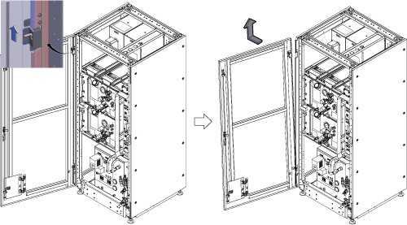
- Remove the bottom reinforcement bar by removing 6 screws.
Figure 2. Remove the bottom reinforcement bar 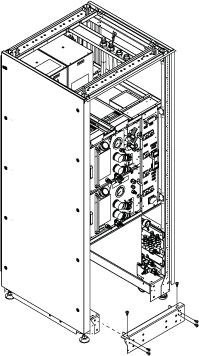
- Install the He line adaptors (long and short) and handle.
- Install the He line adaptor (long).
- Install the He line adaptor (short).
- Install the handle with 3 screws.
Figure 3. He line adaptors (long and short) and handle 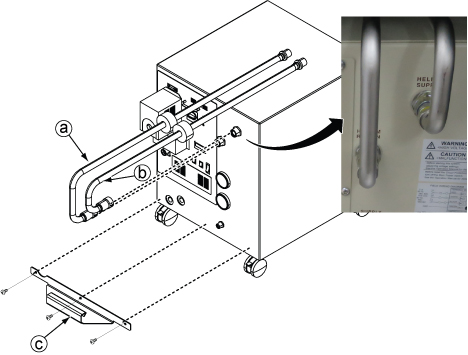
- Connect the E0011 and M0011 cables.
Figure 4. E0011 and M0011 connection 
- Slide the F-50SH shield/cryocooler into the lower opening of ICC.
Figure 5. Shield/cryocooler installation 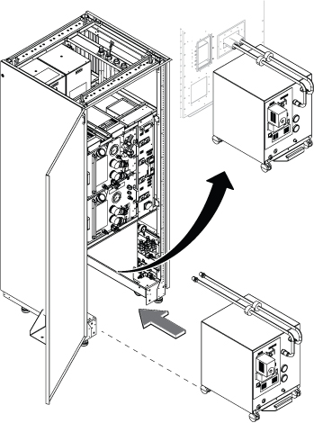
- Do the following steps:
- Insert copper mesh in wave guide.Note: For remote (off-the-wall) siting configuration, insert the copper mesh into the penetration panel waveguide.
- Install elbow pipes.
Figure 6. Copper mesh and elbow pipes 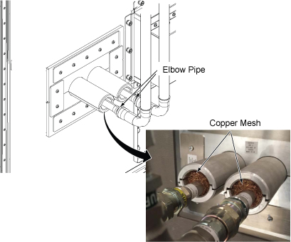
- Insert copper mesh in wave guide.
Equipment room hose and cable connection
Procedure
- Before routing the hoses and cables, make sure the hose/cable alignment on the tray is as shown below.
Figure 7. Equipment room cable tray cross-section view for standard (on the wall) siting 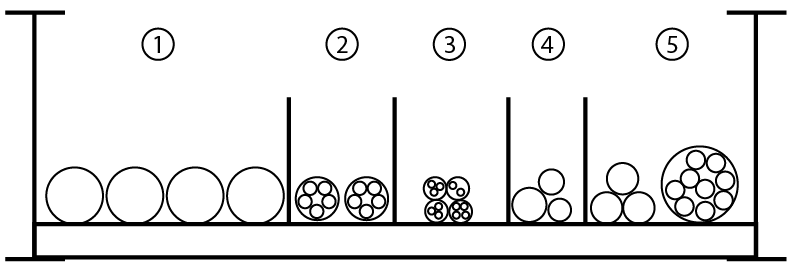
Section Description Contents 1 Water hose Red hose
Green hose
Facility water supply
Facility water return
2 Fiber optics E850
E5001
E5002
3 300V signal, 300V power, and 300V power/signal E3014
E3020
E3041
E3031
4 GND E4007
E4008
MDP-ISC
5 AC power cables E****
E0003
E0007
E0009
E0010
- Note: Make sure to route the hoses to avoid the hoist setup locations, which will be used for FRU replacement.Route the facility water hose on the tray and connect to the hose joint on the ICC.
Figure 8. Hose routing above ICC 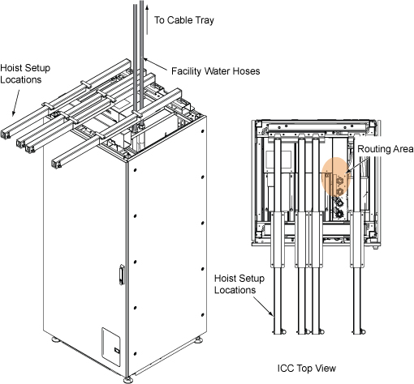
Figure 9. Facility water hose 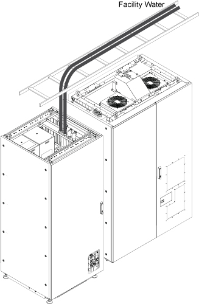
- Connect the hoses per the following steps:Note: Use the gray (5264039) and yellow (5264063) hoses only. DO NOT use the white hose supplied with flow (2333825).
- Connect two elbow hose nipples to the F50 water supply and return ports.Note: Cut the gray hose to make two pieces for supply lines. One is for the line between the FPU and the flow/temp sensor. The other is for the line between the flow/temp sensor and the F-50SH.
- Connect the water flow/temp sensor in between gray hoses with hose bands.Note: Position the flow meter vertically as in Figure 10. Do not lay the meter flat on the chassis, which will result in excessive impeller wear and degrade the performance of the unit over time.Note: The mounting orientation must be with the axis of rotation (shaft) parallel to the ground. It is recommended that the radial surface of the sensor body points downward, or that the fluid ports are in a vertical position for easy air purge.
- Connect water hoses in between the FPU and F-50SH and secure them by hose bands except FPU ends (use gray hose for supply line. Use yellow hose for return line).
- Note: Secure the hose band firmly to avoid a water leak.Cover the hoses with insulator.
Figure 10. 1/2-inch water hose connection 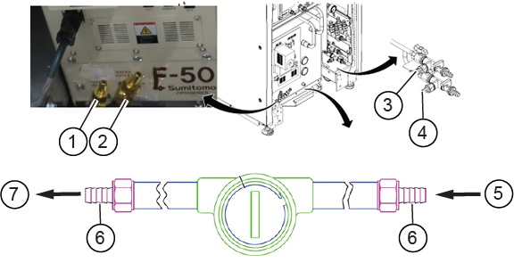
1 Water supply 2 Water return 3 Water return 4 Water supply 5 Water supply (from FPU, gray hose) 6 Hose band connection point 7 Water supply (to F-50, gray hose)
- Connect two elbow hose nipples to the F50 water supply and return ports.
- Install the reinforcement bar with screws.
Figure 11. Reinforcement bar 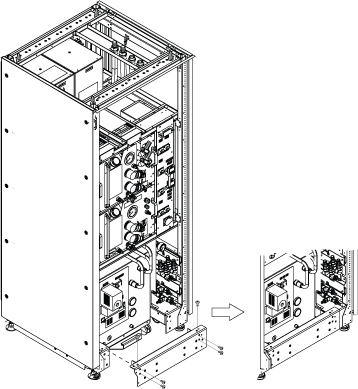
Note: (For Remote (off the wall) siting configuration) The cold head EMI filter should be de-installed from the ICC PW and installed on the Penetration Panel. Refer to Installing the coldhead EMI filter on the penetration panel. - Route and connect the F-50SH power cable (E0009) and sensor cable (Run 826).Note: F-50SH Power is provided by the MDP or facility PDU with a 30A breaker.
Figure 12. F-50SH power cable - (For Standard (on the wall) siting configuration) In the scan room, connect the cables for the magnet monitor and MRU.
(For Remote (off the wall) siting configuration) route the cables from the magnet monitor and MRU to the scan room through the penetration panel (without routing through the ICC).
Figure 13. Cables for magnet monitor and MRU 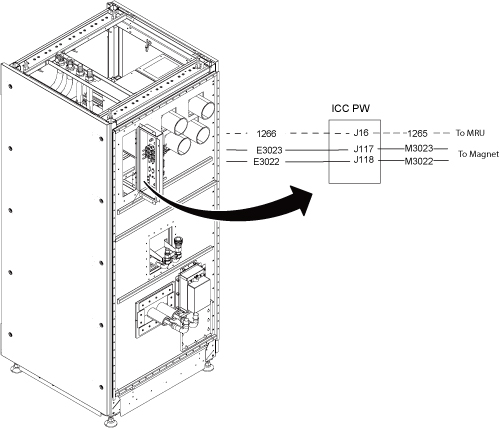
Note: For remote (off the wall) siting configuration, the BNC/DB filter is removed from the ICC PW and installed on the penetration panel. These cables do not pass through the ICC, they connect to the same location on the penetration panel.
Scan room hose and cable connection
Procedure
- Hose routing inside of the ICC PW cover will be as illustrated below.
Figure 14. Hose routing inside of ICC PW cover 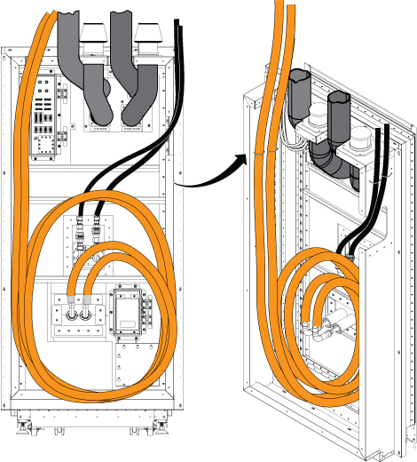
- Route the helium gas flexline and coldhead power line (M0011) from the coldhead:
- (For Standard (on the wall) siting configuration) Refer to Figure 15 for cable alignment on the tray.
- (For Remote (off the wall) siting configuration) Route the helium gas flexline from the coldhead through penetration panel waveguide J110, J111. Route the coldhead power line (E0011) to the equipment room side of the penetration panel, connect cable (M0011) from the coldhead to the penetration panel on scan room side. See Figure 16.
- Connect flexline and power line.
Figure 15. F-50SH and coldhead connection for standard (on the wall) siting configuration Figure 16. F-50SH and coldhead connection for remote (off the wall) siting configuration Figure 17. Scan room cable tray cross-section view for standard (on the wall) siting configuration 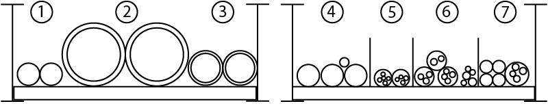
Item Description Contents 1 Water hoses Blue hose
Black hose
2 Air hoses 4-inch air supply - VRMw
4-inch air supply - patient air
3 Gas lines 621 cold head gas line
622 cold head gas line
4 Gradient cables and RF common GND M3317
M3318
M3319
M4005
5 Fiber optic P5001
6 300V signal, 300V power, and 300V pwr/signal cables 624
M3023
M3022
M3339
M3391
M5001
M5002
7 600V Coax/RF cables M5003
M5004
M1305
M1350
M1351
Figure 18. Scan room cable tray cross-section view for remote (off the wall) siting configuration
Magnet Monitor cables and connection check
Procedure
- Connect Magnet Monitor (MM) cables per #id_SL12745850-1212135__SL12269006-1212135 and Figure 21.
- Make sure all cables are connected.
Figure 19. Hose and cables for standard (on the wall) siting configuration 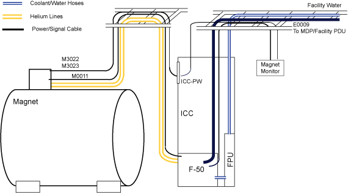
Figure 20. Hose and cables for remote (off the wall) siting configuration 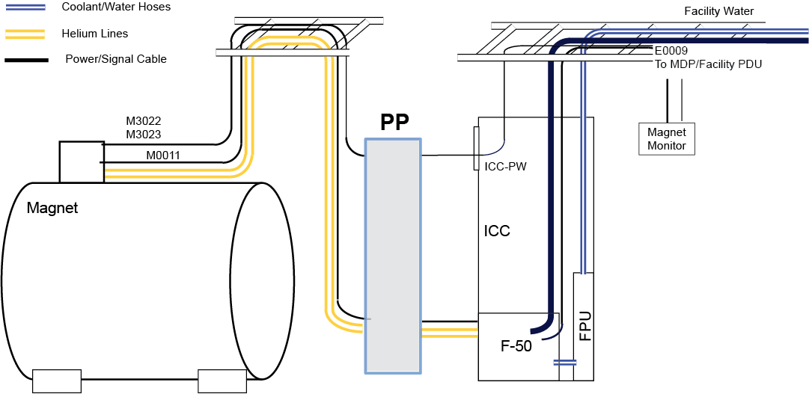
Figure 21. F50SH connection 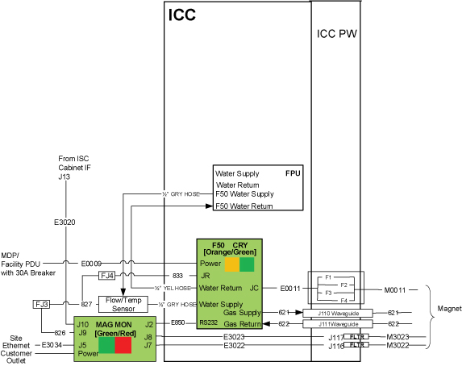
Note: For remote (off the wall) siting configuration, E3023, E3022 cables route through the penetration panel and do not route through the ICC.
Filling ICC primary water circuit
Procedure
- Make sure the facility water hoses are connected to the ICC.
- Close the three valves with the red handle (two valves for emergency cooling and one valve for filter flushing).
- Open the shut-off valve for incoming coolant on module FPU. Leave the shut-off valves (for outgoing coolant) closed.
- Open the valves for in and out lines of the cryogen compressor.
- Connect a transparent hose onto the emergency valve. Install the other end of the flushing hose to a sufficient collecting vessel.
- Open the facility water valves and supply the facility slightly.
- Check for leakage.
- Open the emergency valve hose slightly and flush the water. If coolant with no additions of air (bubbles) appear, close the flushing line by closing the emergency valve.
- Open the shut-off valves. The residual air should leave by flushing the circuits while the system is running. Disconnect the flushing hose.
- Note: Do not exceed the maximum pressure on the pressure gauge.Open valves of supply and return of the facility water as much as needed to read the gauge in between 50 L/min and 80 L/min (13.2 gpm and 21.1gpm).Note: Typical value of water flow is 60 L/min (15.8 gpm).
Figure 22. Valve operation 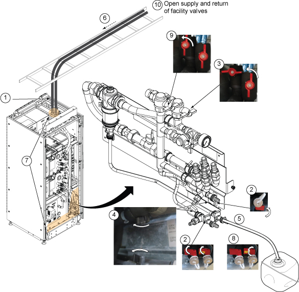
- Check for leakages.
Run the cryocooler
Procedure
Refer to the , and run the cryocooler.